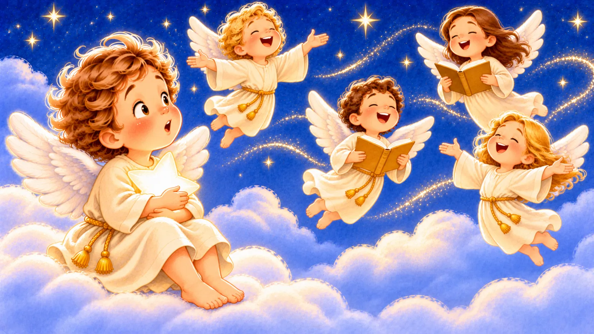
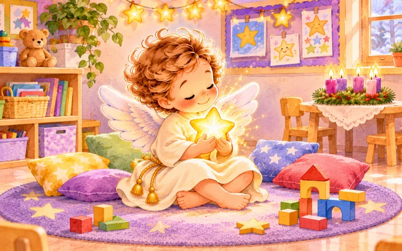
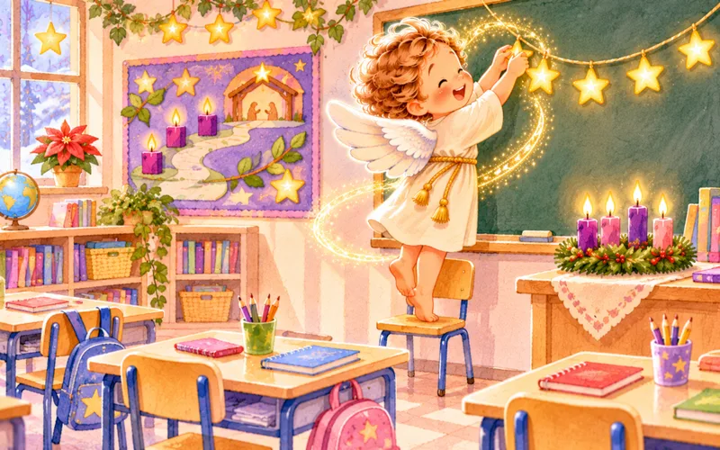
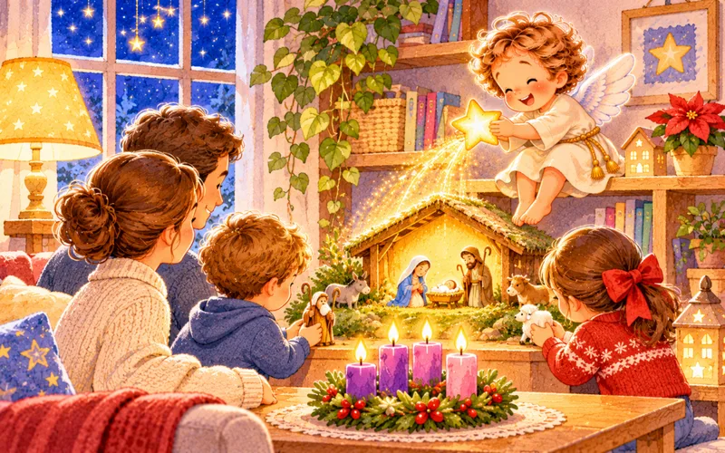
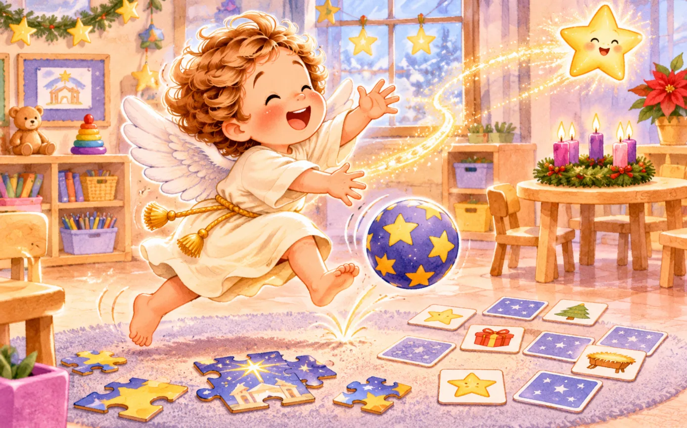

Hace mucho, mucho tiempo, San Miguel hizo una lista con los nombres de todos los ángeles. Al final escribió el de un angelito pequeño que estaba aprendiendo a volar:
—Tú te llamarás Rastro de Dios.
—Tú te llamarás Rastro de Dios.

Rastro de Dios es un angelito pequeño que todavía está aprendiendo a volar. Un día, Dios le pide que cuide una estrella muy especial… ¿Adónde la llevará?
Cuatro semanas para preparar el corazón. Cada domingo encendemos una vela nueva.
Baja despacio: las ilustraciones cambian a medida que avanza la historia.
También puedes .
Hojéalo aquí mismo, como si lo tuvieras en las manos.
Adaptación libre del cuento «Rastro de Dios», de Montserrat del Amo (Ediciones SM, colección El Barco de Vapor). Edición: Escuelas Salesianas María Auxiliadora · Nervión · Sevilla.
Tres minutos para verlo en clase o en casa, con la voz de la narradora y los personajes. Puedes activar los subtítulos desde el reproductor.

Actividades, rutinas y celebraciones para vivir el Adviento con el Angelito Burlón en el aula y en casa.

Las travesuras del angelito en el aula, la estrella que cuidamos entre todos y pequeños gestos cada semana.

Retos semanales para ser «estela de luz» para los demás: ayudar, compartir y esperar a Jesús con alegría.

Ideas sencillas para que el Angelito Burlón visite también vuestra casa y preparéis juntos la Navidad.
Tres juegos para la pizarra digital, la tablet o el móvil.
 Busca al angelitoEncuéntralo en cada escenaJugar
Busca al angelitoEncuéntralo en cada escenaJugar
 Vuela con la estrellaEsquiva nubes y recoge luzJugar
Vuela con la estrellaEsquiva nubes y recoge luzJugar
 Parejas del cuentoMemoria con las escenasJugar
Parejas del cuentoMemoria con las escenasJugar
Y uno escondido: mientras recorres la web, a veces el angelito asoma la cabecita por algún rincón. Si lo ves, ¡tócalo antes de que se escape!
Lo has encontrado 0 veces.

Todo lo que necesitas para vivir el cuento en clase y en casa: para leer, imprimir, colorear, cantar y rezar.
Versión para leer en pantalla, con todas las ilustraciones.
PDF en A4 para imprimir en el colegio o en casa.
El cuento en dibujos animados, con subtítulos.
El cuento con voces, pausas y gestos para contarlo en voz alta.
En color, para colorear, con el gesto de la semana y en 3D.
Ocho escenas del cuento con una frase, en dos niveles.
Un villancico nuevo para cantar en los buenos días. Toca la nota para escucharlo.
Una oración sencilla para clase o casa. Toca el corazón para escucharla.